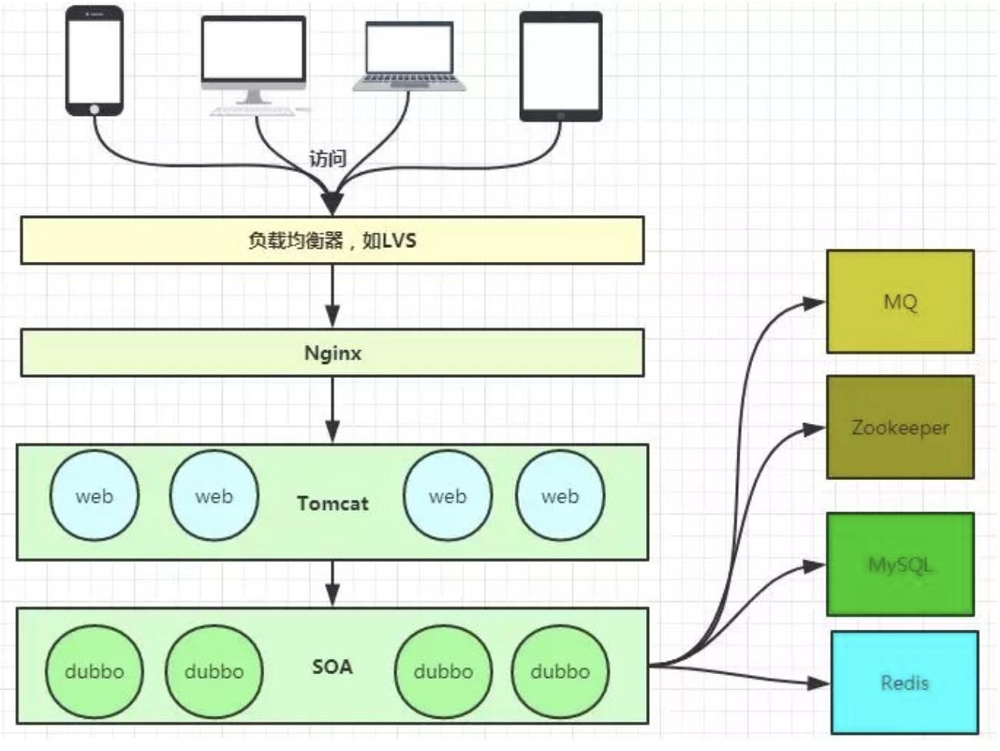
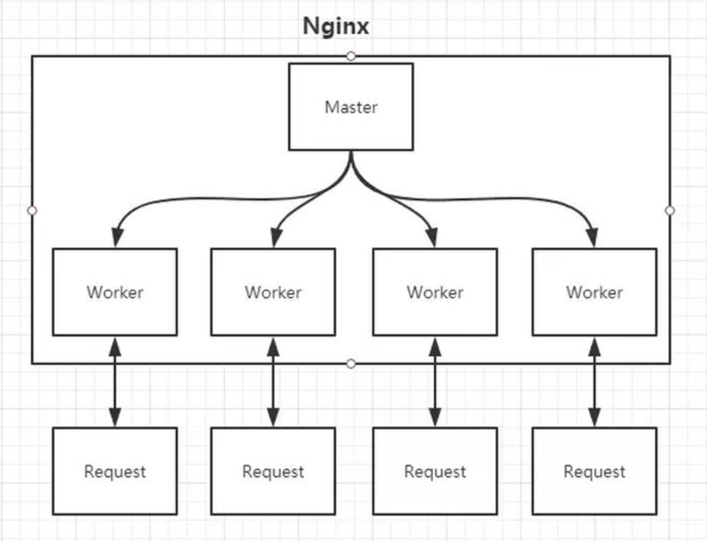

what is NGINX?
nginx.conf
example link 1
example link 2
1
2
3
4
5
6
7
8
9
10
11
12
13
14
15
16
17
18
19
20
21
22
23
24
25
26
27
28
29
30
31
32
33
34
35
36
37
38
39
40
41
42
43
44
45
46
47
48
49
50
51
52
53
54
55
56
57
58
59
60
61
62
63
64
65
66
67
68
69
| worker_processes 5; ## Default: 1
error_log logs/error.log;
pid logs/nginx.pid;
worker_rlimit_nofile 8192;
events {
worker_connections 4096; ## Default: 1024
}
http {
include conf/mime.types;
include /etc/nginx/proxy.conf;
include /etc/nginx/fastcgi.conf;
index index.html index.htm index.php;
default_type application/octet-stream;
log_format main '$remote_addr - $remote_user [$time_local] $status '
'"$request" $body_bytes_sent "$http_referer" '
'"$http_user_agent" "$http_x_forwarded_for"';
access_log logs/access.log main;
sendfile on;
tcp_nopush on;
server_names_hash_bucket_size 128; # this seems to be required for some vhosts
server { # php/fastcgi
listen 80;
server_name domain1.com www.domain1.com;
access_log logs/domain1.access.log main;
root html;
location ~ \.php$ {
fastcgi_pass 127.0.0.1:1025;
}
}
server { # simple reverse-proxy
listen 80;
server_name domain2.com www.domain2.com;
access_log logs/domain2.access.log main;
# serve static files
location ~ ^/(images|javascript|js|css|flash|media|static)/ {
root /var/www/virtual/big.server.com/htdocs;
expires 30d;
}
# pass requests for dynamic content to rails/turbogears/zope, et al
location / {
proxy_pass http://127.0.0.1:8080;
}
}
upstream big_server_com {
server 127.0.0.3:8000 weight=5;
server 127.0.0.3:8001 weight=5;
server 192.168.0.1:8000;
server 192.168.0.1:8001;
}
server { # simple load balancing
listen 80;
server_name big.server.com;
access_log logs/big.server.access.log main;
location / {
proxy_pass http://big_server_com;
}
}
}
|
如何工作？
常见业务架构

如何做到热部署
nginx 做法：
- Change nginx.conf
- The changes take effect
- new some workers, new requests => new workers.
- old workers continue to handle unfinished requests. If a old worker completes the remaining requests, KILL it.
还有可能的方案：
修改配置文件nginx.conf后，主进程master负责推送给woker进程更新配置信息，woker进程收到信息后，更新进程内部的线程信息。（有点 valatile 的味道）
功能
0. 虚拟主机

为什么要加一层 nginx，而不直接通过后端的路由（框架，比如Django）进行 serve ？
核心问题其实是为什么需要这样一个 server ， 『业务逻辑』不在 server 上面。
- 通过
location配置正则表达式，将 request.URL 快速匹配到对应 static file 上。
- 为什么能提高速度？动静分离，静态资源给 Nginx 管理，动态请求（就是上面的主要业务逻辑）转发给后端。比如
index.html。
- 静态资源包括 业务数据 和 日志数据，归属到不同域名下（目录），方便维护。
- IP 控制访问，比如 black list / white list ，部分 request 不需要转给 server
1. 反向代理
location:
- root: 静态返回
- proxy_pass: 动态转发
2. 负载均衡
- upstream: nginx 定义一组后端服务，通过一些 LB 策略进行负载均衡，同时进行健康检查。
- proxy_pass => upstream
负载均衡有哪些策略？
（IPHASH、加权论调、最少连接……）
https://github.com/shaorui0/tiny_load_balancer
pros
显而易见，可以 scale up ，部署更多的 server 来处理 request 。
cons
本质还是『不一致』的问题。web 层面，比如用户的 session 信息不一致。（由于 request 经过 lb 到达不同的 server 端）
从 tiny_lb 中学到什么？
- 反向代理是什么东西？
本质是解耦，client 不知道 server 的 IP ， server 不知道 client 的 IP。两者都经过第三方 reverse_proxy_server ，更符合直觉。
- 正向代理是什么东西？
典型的应用场景就是VPN，client 知道 server 的 IP，但是中间是通过第三方绕过了 WALL，对 client 透明，server 获取到的 IP 是 VPN_server.IP。
3. 缓存
TODO
怎么进行高并发
- 本质上是设计的优秀，eventloop
- Master - Worker(1 - n)
怎么进行高可用
keepalive + nginx：keppalive 监控 nginx 的生命，防止单点 nginx 挂掉。